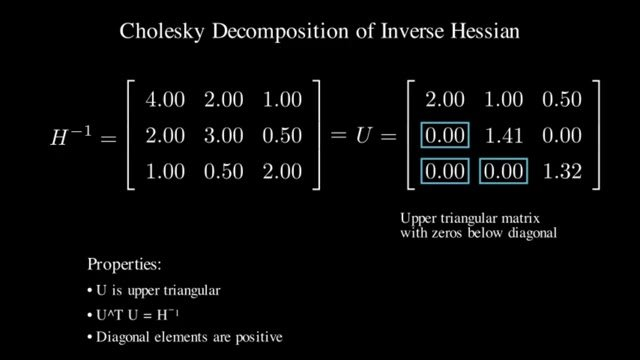

Lazy batches and Cholesky
The previous note precomputes the inverse rows. Two further changes make that schedule finish on a large GPU: do not write the weight matrix after every column, and do not build those rows by repeated elimination.
Write the other columns when you need them
A direct column loop is a poor GPU program even after the order is fixed. Equation (3) touches a large matrix and does a few FLOPs per entry. The arithmetic units wait on memory bandwidth. The video's earlier distinction applies inside the quantizer, not only at inference: this step is memory-bound.
The observation that unlocks the batch is narrow. The rounding decision for column $i$ depends only on updates already applied to column $i$. Updates destined for later columns do not change that decision. So you can quantize a block, keep the corrections inside the block, and apply them to the rest of $W$ once, as a matrix product, when the block is done.
The paper uses $B=128$. The video says a chunk of about 200 or 256 rows. Same idea, and the constant to implement is 128 unless you are deliberately changing blocksize. Inside the block the algorithm still walks column by column, using the $B\times B$ diagonal block of the inverse. At the end of the block it applies the multi-weight versions of the update and the removal:
$Q$ is the set of columns just quantized. This does not reduce the FLOP count. It raises the arithmetic done per byte moved, which is why the paper calls it an order-of-magnitude speedup on very large models and "a critical component", separate from the asymptotic gain of the shared column order.
Do not confuse this 128 with a group size. groupsize decides which columns share a scale and a zero. blocksize decides how many columns are quantized before the rest of the weight matrix is updated. The paper's Algorithm 1 has a block size and a single grid. The code can use both.
Elimination accumulates; Cholesky is computed once

The elimination step itself is the rank-one downdate of the inverse. Repeated elimination, and the extra inversion inside the block update, can make the running $H_F^{-1}$ indefinite. The next update then pushes the remaining weights the wrong way, and that layer's quantization can be arbitrarily bad. The paper reports that this shows up on models larger than a few billion parameters, on at least a few layers, almost certainly.
Dampening is the first patch. Add $\lambda$ to the diagonal of $H$, with $\lambda$ equal to 1% of the average diagonal value. The authors' code uses percdamp=.01 in exactly that way. Dead columns, where the diagonal is already 0, are set to 1 and the corresponding weights to 0 before the dampening, so the factor exists. For smaller models the paper says dampening is enough. For the large ones it is not, because there are more elimination steps and the error accumulates. They keep the dampening and stop eliminating.
Only part of $H_F^{-1}$ is ever read. When column $q$ is quantized, the update needs row $q$ of the inverse that still includes $q$ and the later columns, from the diagonal rightward. For a symmetric positive definite matrix, producing all of those rows is a Cholesky factorization, up to a scale. Ordinary elimination does not divide row $q$ by $\sqrt{[H^{-1}]_{qq}}$. Cholesky does. That is the "minor difference" the paper names. After the factor is computed, Algorithm 1 stores the upper triangle and uses it in place of the inverse:
In the inner loop the per-column error is $(W_{:,j}-Q_{:,j})/[H^{-1}]_{jj}$, and the block update is a product against the stored rows of that factor. The square-root scaling is why this is not a drop-in replacement that ignores the diagonal. The code follows Algorithm 1: Cholesky, invert, Cholesky again with upper=True, then divide by the diagonal of that factor.
The video adds two reasons to prefer the kernel, beyond the stability the paper measured. Symmetry is built in, so a general elimination does about twice the FLOPs, and Cholesky kernels have had years of tuning. I would not quote "twice as fast" as a GPTQ benchmark. The paper's claim is that the factor is stable on the models where dampened elimination was not, and that a good kernel is also faster. The slide above is the intuition for the triangle, with 1.41 and 1.32 standing in for square roots.
What to remember as the method
Put the three changes back together and the procedure for one layer is short.
- Collect calibration inputs. Transpose them if they are $(\text{tokens},\text{in})$, form $H=2XX^{\mathsf T}$, damp the diagonal by 1% of its mean, and replace the inverse by its upper Cholesky factor.
- Walk columns from left to right, in blocks of 128. Quantize the column, record $(w-q)/H_{jj}$, and apply that correction inside the block immediately.
- When the block ends, apply the recorded corrections to all later columns in one product. Those later columns are still full precision. The columns already quantized are left on the grid.
Group-wise scales, if you use them, are chosen on the columns they cover. They are not a fourth step in Algorithm 1.
The result is not identical to greedy OBQ. The paper's claim is that on large layers the squared error is similar, and the solve is cheap enough to run. Figure 1 is the published check: 4-bit GPTQ on the OPT family and 3-bit GPTQ on BLOOM, against FP16 and round-to-nearest, measured as WikiText-2 perplexity. The video skips those plots and says you can assume the method is in use because it is good enough, while granting that full OBQ can still be more accurate in its raw form. Read the figure if you need the comparison. Do not promote the video's aside into a benchmark.
Activation quantization is a separate problem. The paper leaves it out and points at other methods for it. A GPTQ weight tensor does not, by itself, mean the activations are 4-bit.
Should I restore the greedy weight pick to get OBQ accuracy?
On a large layer the paper's finding is that the accuracy gap is small and the shared inverse disappears as soon as each row has its own order. If you need the greedy pick, you are running OBQ, and you should budget for the cubic pass. actorder does not restore that pick.
If the inverse rows are precomputed, can every column be quantized at once?
No. The inverse row for column $q$ does not depend on earlier snaps. The weight value in column $q$ does. It has to include the compensation from columns $0,\ldots,q-1$. The paper walks the columns in order. The precompute removes the inverse's serial dependence, not the weight matrix's.
The paper writes $H=2XX^{\mathsf T}$. Do I precompute that on a PyTorch activation as stored?
No. Transpose a linear activation to $(\text{in},\text{tokens})$ first. Then $2XX^{\mathsf T}$ is the paper's matrix, and the Cholesky of its inverse is the object Algorithm 1 stores. Skipping the transpose precomputes the wrong coordinates. The video's layout correction applies to this step, not only to the printed objective.
Why did dampening work on small models and fail on large ones?
The paper's account is accumulation. Each elimination step, and each block inversion, adds numerical error. A model with wider layers takes more steps. Cholesky computes the rows you need once, from the damped $H$, instead of updating a running inverse.
Is the 128 in a GPTQ config the group size or the block size?
Read the argument name. In the authors' fasterquant, blocksize defaults to 128 and groupsize defaults to $-1$, meaning the grid is not re-estimated every 128 columns. A config that sets both to 128 is using both knobs.
Sources
- Frantar et al., GPTQ, section 4 and Algorithm 1. $B=128$, dampening, and the Cholesky rewrite.
- Authors'
gptq.py,fasterquant:blocksize=128,percdamp=.01, and the upper Cholesky. - Savolainen, from 23:12. Memory-bound batches, and the Cholesky frame at about 31:29.